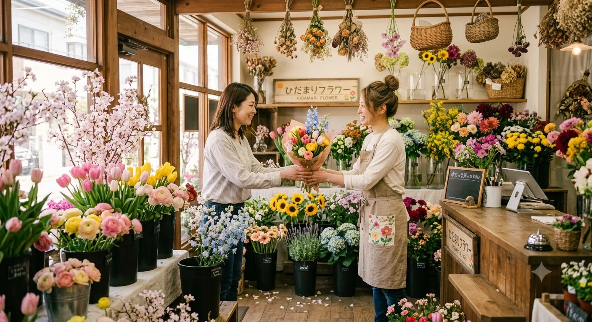
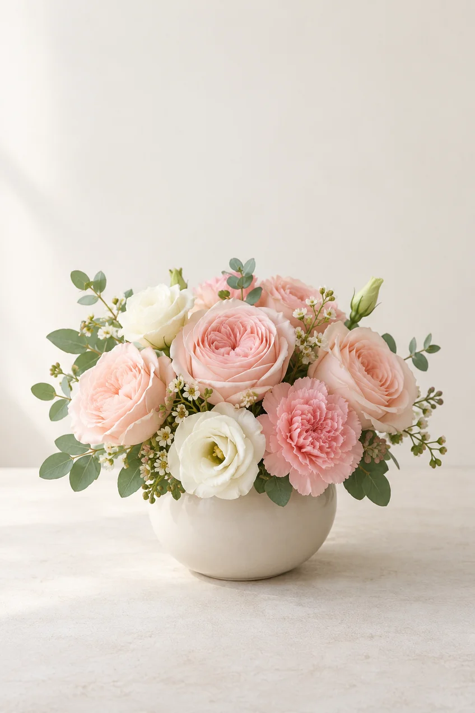
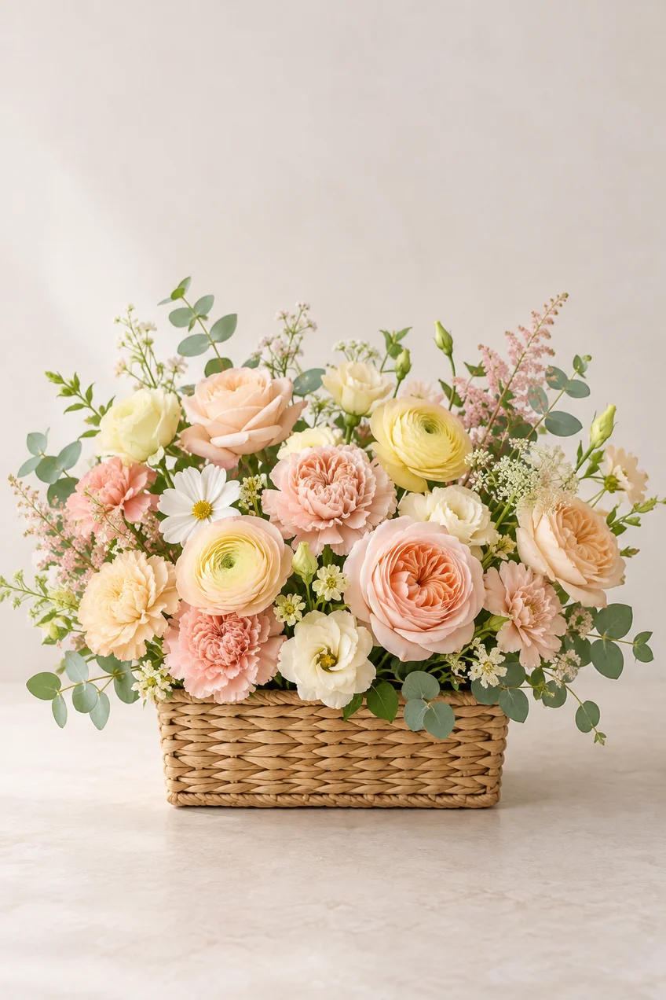
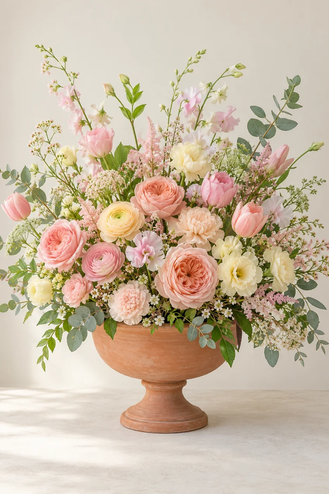
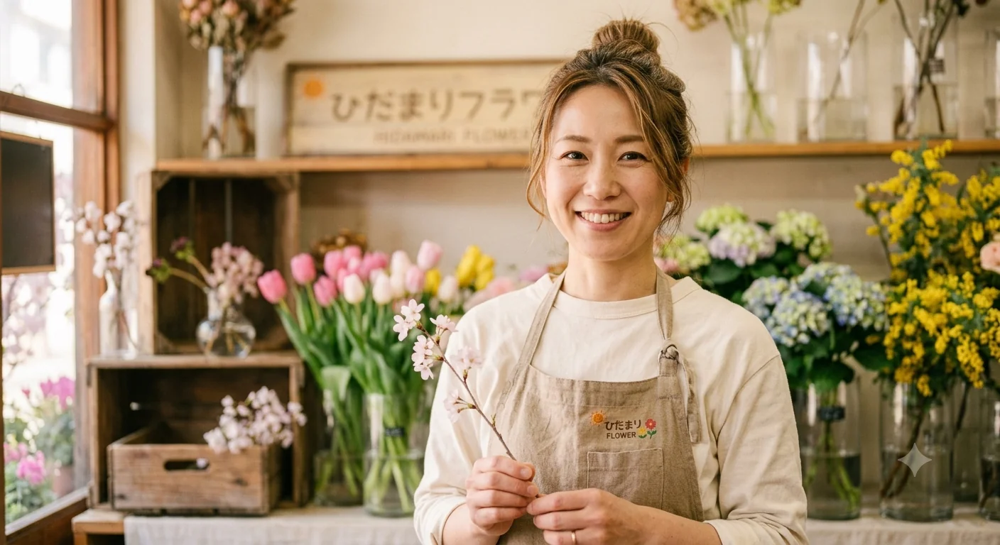

季節の切り花
一輪から気軽に。季節ごとの色や香りを、お部屋に迎えてみませんか。
Everyday flowers
お花を選ぶきっかけは、どんな小さなことでも。
About us
街角の小さな、あたたかい花屋です。
「ひだまりフラワー」は、街角にある小さな花屋です。太陽の光が差し込むひだまりのように、皆さまの毎日にそっと寄り添い、心を明るくするお花を届けたい。そんな思いからお店を開きました。
特別な日の華やかなギフトはもちろん、ご自宅のテーブルに飾る一輪まで。季節感あふれる花や植物をご用意しています。植物が健やかに育つよう、通気性のよい麻やジュートなど、自然素材のプランターや鉢カバーも選びました。
お散歩やお買い物の途中に、お花の香りを楽しみに、どうぞ気軽にお立ち寄りください。

一輪から、あなたの暮らしに。
Flowers & greenery
贈りものにも、暮らしの中の楽しみにも。
一輪から気軽に。季節ごとの色や香りを、お部屋に迎えてみませんか。
お祝いやお礼、何でもない日の贈りものに。用途や好きな色を伺ってお作りします。
はじめて植物を育てる方にも、置き場所や水やりのコツをお伝えします。
麻やジュートの風合いを楽しめる、通気性のよいプランターや鉢カバーを揃えています。
Our care
花を選ぶ時間から、楽しんでいただけるように。
その時季ならではの花や緑を選び、色合わせや香りも楽しめるようにご提案します。
花と、ひだまりを。
「まず一輪飾ってみたい」という方も歓迎です。花器や置き場所に合うお花を一緒に選びます。
色や雰囲気、贈る相手の好みを伺い、気持ちが伝わる花束をお作りします。
水やりや飾る場所など、植物と長く付き合うためのコツを丁寧にお話しします。
植物に合うだけでなく、お部屋にもなじむ麻やジュートの鉢カバーを揃えています。
How to order
お花に詳しくなくても大丈夫。ご希望を聞かせてください。
贈りものかご自宅用か、いつ使うかをお聞かせください。
好きな色や雰囲気、ご予算に合わせて花を選びます。迷っていてもご相談ください。
季節の花を組み合わせ、贈る場面や飾る場所を思い浮かべながら仕上げます。
できあがったお花と一緒に、お手入れのポイントもお伝えします。
Gallery
花の組み合わせや表情は、季節ごとに変わります。



Price guide
サイズ・点数・オプションを選んで合計を確かめ、そのままご注文いただけます。
| サイズ | 価格 | イメージ |
|---|---|---|
| S | 3,000 円 | 小さな贈りものに |
| M | 5,000 円 | お祝いの定番に |
| L | 8,000 円 | 華やかな贈りものに |
選んだ条件から合計金額を計算します。
合計金額
この内容で注文する※ 作例のサイトのため、実際には注文されません。押すと、選んだ内容がお問い合わせのフォームに入ります。

店主のご挨拶
こんにちは。「ひだまりフラワー」店主の春野咲良です。お花や緑が身近にある暮らしの豊かさをお伝えしたくて、このお店を開きました。
毎日の散歩では、春の桜や水仙、初夏に道端で揺れる昼咲月見草など、移り変わる季節の草花を眺めるのが楽しみです。
「お花を飾ってみたいけれど、すぐ枯らしてしまいそう」という方もご安心ください。水やりのコツや風通しのよい飾り方を、一緒に考えます。お気に入りの一輪を探しに、気軽に遊びにいらしてくださいね。お店でお会いできるのを楽しみにしています。
FAQ
お花を選ぶときの疑問をまとめました。
もちろんです。お部屋の雰囲気や飾る場所に合う一輪を、一緒に選びましょう。
はい。用途や贈る相手の好みを伺いながら、花の種類やボリュームを一緒に考えます。
お渡しする日が決まっている場合は、早めにご相談ください。季節の花の中から、ご希望に合う組み合わせを考えます。
花瓶を清潔に保ち、水をこまめに替えるのが基本です。直射日光や暖房の風を避けて飾ると、花が傷みにくくなります。
大丈夫です。置き場所や水やりの頻度など、植物に合わせた育て方をお伝えします。
はい。植物の大きさやお部屋の雰囲気に合わせて、麻やジュートなど自然素材の鉢カバーをご案内します。
Visit us
お散歩やお買い物の途中に、ふらりとお立ち寄りください。
花束や植物のことも、気軽にご相談いただけます。
愛知県名古屋市昭和区鶴舞一丁目1番168号
Contact form
花束のご相談や、お花・植物についてのご質問をお送りください。